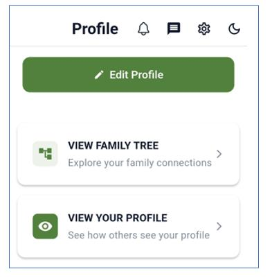
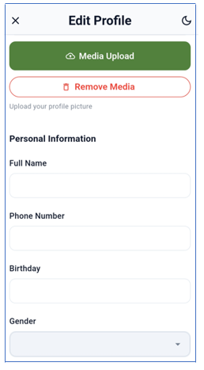
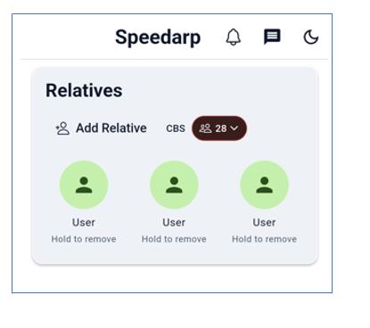
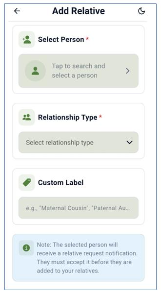
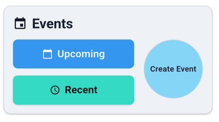
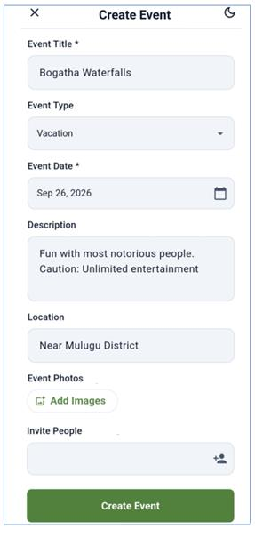
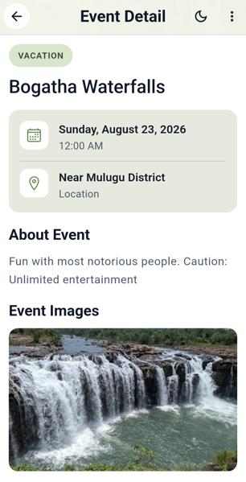

Learn more about Speedarp and how we help families stay connected
Speedarp is a dedicated mobile application designed to bring relatives and cousins closer, preserve family memories, and keep your family connected across generations. With Speedarp, every profile becomes a living archive, every event a cherished moment, and every memory a thread in your family's story. Whether you're adding relatives, creating events, or uploading photos, the app ensures your legacy is not just remembered, but actively lived. Speedarp is available on both the App Store and Play Store.
From setting up your profile to reliving your favourite family moments — here's what you can do
After downloading the app, your Home Screen shows New User as your default name. At the bottom you'll find Home, Tutorial, Kin Feed, Community and Profile. Tap Profile, then Edit Profile to get started.
In Media Upload, add a photo so relatives can recognise you. Under Personal Information, replace New User with your name — ideally including your surname or family name — then add your phone number, birthday and gender.
Next comes Occupation, a mandatory field that powers Speedarp's Occupational Compass feature (choose "Others" if yours isn't listed). Blood Group and Social Media links are optional. Tap Save Changes — your profile is ready!


In the Relatives section on your home screen, tap Add Relative. Right beside it you'll notice CBS — your Cousin Bonding Score. Every relative you add increases this score by 2, a little gamified nudge to grow your family circle.
Search for the person under Select Person, choose from 23 relationship types, and optionally add a Custom Label — a nickname like "Maternal Cousin" or "Paternal Aunt". Tap Add, and once they accept the request, they're added to your relatives list.


Events are one of Speedarp's signature features — built to reflect the rhythm of your family's life and relationship milestones. Tap the Create Event circle to get started.
Give your event a title, choose a type — Family, Birthday, Vacation, Anniversary, Holiday and more — set the date, add a description and location, upload photos, and invite the people you want there. Tap Create Event and it's live.
Back on your home screen, upcoming events show up right in your feed. Tap View Details to see the date, location, description, photos, the organiser, and everyone attending.

Events home

Create an event

Event details
Speed: It is considered as one of the core values of the organization. There are several firms operating in the same magnitude but with distinct potentials. It is the speed of the services that would differentiate the business from the rest and keeps the firm ahead in the never-ending competitive race.
Integrity: Being one of the basic human values, integrity at Speedarp means being honest, open and transparent about the manner in which Speedarp conducts business. It encompasses all of our colleagues, business partners and clients.
Continuous Learning: Speedarp considers learning as a key contributor towards organizational growth. Speedarp encourages and motivates employees to acquire new learning approaches. Continuous learning leads to identification of growth and business opportunities for the organization. Founder of the organization believes that continuous learning leads to continuous growing.
Diversity: Diversity is considered as the cog unit of the business. We at Speedarp cherish diversity and aim to leverage growth through it.
Speedarp Solutions is a key believer of giving it back to the society. Every year the organization endeavors in community services like celebrating the new year at old age homes, arranging breakfast for school children and underpinning the societal needs in all possible ways.